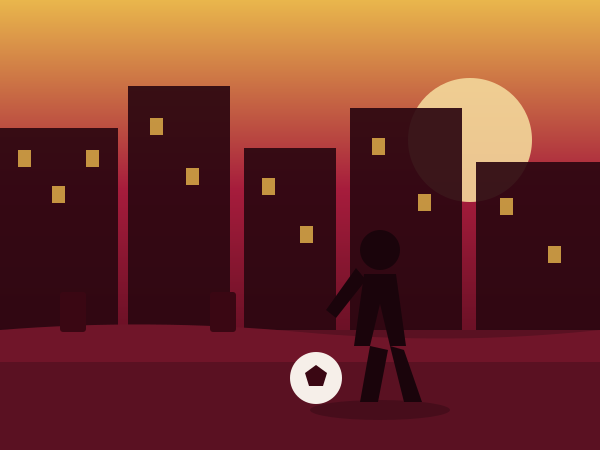

01Мяч дороже всего
Мне было шесть, когда старший двоюродный брат вынес во двор мяч с ободранным боком. После дождя он становился как камень, и бить по нему босиком было чистым безумием — мы всё равно били.
Бутс не было. Первые два года я играл в кедах на размер больше и набивал в носок газету, чтобы нога не болталась. Тогда я считал это нормой. Сейчас понимаю: именно на этом разбитом асфальте я научился первому касанию — там его просто нельзя было испортить.
«Если ты обыграл человека на асфальте — на газоне тебе будет скучно.»